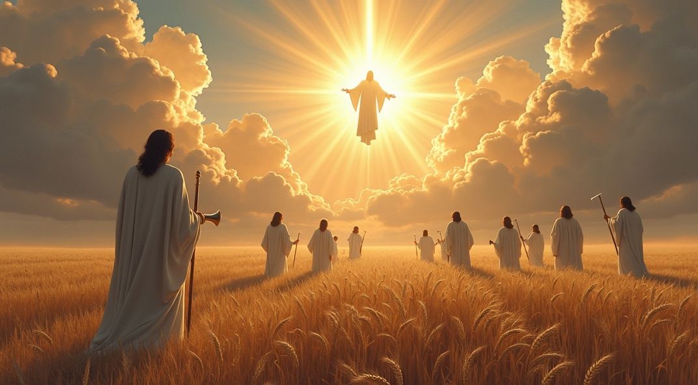

What Exactly Are the End Times?
Summary
What the Bible Really Means by End Times
Understanding the Biblical Concept of the End Times
Wars, disasters, political upheaval—each new crisis provokes a familiar question: Are we living in the end times? According to the Bible, the answer is both simpler and deeper than we might expect.
- The Last Days Are Already Here: The New Testament affirms that believers are living in the last days, characterized by the rise of "antichrists" who deny Christ’s truth (1 John 2:18).
- Signs Are "Beginning of Sorrows": Wars, famines, and natural disasters are signs of the times but not definitive indicators of the immediate end (Matthew 24:6-8).
- The End Is the Establishment of God’s Kingdom: The ultimate "end" refers to the moment when Christ’s reign is fully established on earth, culminating in the new heaven and new earth (Revelation 11:15; 20–22).
The Kingdom of God: The Central Theme
Instead of date-setting or sensational predictions, the New Testament offers a theological and redemptive view of the end times. The final culmination will not be global annihilation, but the transition from human rule to divine reign: “The kingdoms of this world have become the kingdoms of our Lord…” (Rev. 11:15).
- Kingdom Preached First: Jesus began His ministry preaching the Kingdom of God, calling for repentance and faith (Matthew 4:17).
- Parables Illustrate the Kingdom’s Nature: Parables such as the landowner hiring laborers (Matthew 20:1-16), the pounds (Luke 19:11-27), and the wheat and tares (Matthew 13:24-30) teach that the Kingdom’s full manifestation is delayed and involves a period of faithful labor and testing.
- The Kingdom Is Both Present and Future: The Kingdom is currently being established through the Church’s mission but awaits consummation at Christ’s return.
Key Eschatological Events and Conditions
Jesus’ parables—especially those in Matthew 13—help us grasp the progression of God’s Kingdom. The Parable of the Wheat and the Tares, for example, shows the Church age as a time when both righteous and wicked grow together until the harvest at the end of the age. Similarly, the Parables of the Pounds and the Vineyard teach that Christ has gone away to receive His Kingdom but will return to reward His servants.
- Preaching of the Gospel Worldwide: The Gospel must be preached as a testimony to all nations before the end comes (Matthew 24:14).
- Tribulation and Perseverance: Believers will face tribulation and persecution, which serve as a test of faithfulness (2 Thessalonians 1; Acts 14:22).
- The Apostasy and the Man of Sin: A great falling away and the revealing of the Antichrist signal that the end is near (2 Thessalonians 2).
The Proper Christian Response
The Church must reject the myth of an “any-moment” return and embrace its present calling: faithfulness, witness, and stewardship. Like David anointed but not yet enthroned, believers today are in a period of testing and preparation. This era is not for passive waiting but active participation in God's unfolding redemptive plan.
- Avoid Speculation and Passive Waiting: Christians should not expect an "any-moment" return of Christ detached from biblical signs and should not adopt escapist attitudes.
- Engage in Faithful Stewardship: The parables teach that believers are called to active service and faithful use of their gifts in anticipation of Christ’s return (Luke 19:11-27).
- Endure Trials with Hope: Suffering and testing prepare believers for future reign with Christ, reflecting the pattern of David’s anointing and preparation (1 Samuel 16–17).
Theological and Practical Implications
The end times are not something to fear or speculate over—they are a call to watchful readiness, faithful labor, and kingdom-minded living. The harvest is coming. The question isn’t when—but how are we preparing for the King’s return?
- 01The period between Christ’s first and second coming is a redemptive interval designed for the Church’s growth and preparation.
- 02The Church participates in Christ’s royal priesthood now, awaiting full manifestation of the Kingdom.
- 03The eschatological hope is not mere future escape but present faithful engagement in God’s mission.

Full Article
What Do "End Times" Mean?
Every time there are wars, unprecedented natural disasters, political chaos, or the latest atrocities committed by society’s outcasts, Christians and non-Christians tend to ask; Are these the end times? Surprisingly, the Scriptures only say these are only the beginning of sorrows not the end.
Biblically speaking, the end times began during the days of Jesus. We must consider the words of John in his epistle. John’s letter was already considered the "last times", or "the end times".
This can be surmised in the verse below: "because many antichrists have arisen." We will know we are nearing the final hour when the Antichrist (singular) is revealed. The concept of the end times or last days is deeper than a simple date on a calendar. It is not necessarily when a war begins. These are signs and the beginning of sorrows, but not the end (Matthew 24:6–8).
❝ Little children, it is the last time; and as you have heard that the Antichrist (singular) shall come, even now there are many antichrists (plural); whereby we know that it is the last time. ❞
- John 2:18
The end we are awaiting does not refer to the annihilation of the material world, but to the moment when, “The kingdoms of this world have become the kingdoms of our Lord and of His Christ, and He shall reign forever and ever” (Revelation 11:15). Scripture speaks of “the end” or “the end of the age,” referring to the conclusion of human government.
Then Jesus Christ will come to reign on the earth. Revelation chapters 20 and 22 lays out the sequence of events in this order:
- Jesus Christ will reign on the earth for a thousand years, and Satan will be imprisoned (Revelation 20:1-7).
- Satan will be released for a short time (20:7-10).
- The judgment before the great white throne (20:11-15).
- After all this, there will be a new heaven and earth (Revelation 22).
Preaching His Kingdom First
Then Comes the End
The reason we should view eschatology from this perspective is that Jesus came to set up the Kingdom of God on earth. Although this kingdom has not yet been physically established, it is currently in the stage of recruiting laborers or participants. Scripture presents two particularly important parables that highlight this theme. The first is the parable of the landowner (Matthew 20:1–16). “For the kingdom of heaven is like a landowner who went out early in the morning to hire laborers for his vineyard. So the last will be first, and the first last. For many are called, but few chosen.”
This landowner seeks laborers to work in his vineyard. The purpose of the parable is to show that God will reward all equally—that is, the salvation of our souls. Verse 16 highlights a key point: God is actively calling everyone to be part of His (earthly) Kingdom, but few are chosen (heavenly). God’s intention is that the Gospel of the Kingdom be preached in all the world as a witness—then the end will come.
❝ And this gospel of the kingdom shall be preached in all the world as a testimony to all nations, and then the end will come.❞
- Matthew 24:14
We should not be confused about the different terms associated with the Kingdom of God. The “Kingdom of God” and the “Kingdom of Heaven” are terms used interchangeably to describe the preaching of God's Gospel to humanity.
Consider the following:
| Matthew 4:17 “From that time Jesus began to preach and to say, ‘Repent, for the kingdom of heaven is at hand.” |
Mark 1:14 “Now after John was put in prison, Jesus came into Galilee preaching the gospel of the kingdom of God.” |
|
| Matthew 13:11 “He answered and said unto them, ‘Because it is given unto you to know the mysteries of the kingdom of heaven, but to them it is not given.” |
Mark 4:11 “And He said unto them, Unto you it is given to know the mystery of the kingdom of God; but unto them that are without, all these things are done in parables.” |
In fact, the phrase “Kingdom of Heaven” is used exclusively in Matthew’s Gospel. Both writers are describing the same concept. Jesus begins His ministry preaching the Gospel of the Kingdom of God.
First Condition
The first prerequisite for the Second Coming of Jesus Christ is the preaching of this Gospel, not merely the knowledge of Jesus throughout the earth. Rather, it must be the true Gospel: repentance, baptism in the only saving name—Jesus (Acts 4:12), and receiving of the Holy Spirit (Romans 8:9).
The Gospel is the death, burial, and resurrection of Jesus Christ applied to us through the new birth (John 3). This Gospel has not yet been preached or established entirely throughout the whole earth.
A peculiar trait of these parables is that they do not focus on how to enter the Kingdom of God (which is through the New Birth) but rather explain how the first phase of God’s Kingdom begins and ends. Jesus explicitly tells this repeatedly, as the people expected His reign to be like David’s—a military-political conquest. Thus, He often teaches about the necessity of His death and departure, so that He may send the Comforter (John 16:7). The Scriptures are unequivocally clear on this matter.
The Parable of the Pounds
(a.k.a. The Talents Matt. 25:14-30)
The next parable with eschatological implications is the Parable of the Pounds, found in Luke 19:11–27. This complex parable features three main characters: the nobleman, the faithful servants, and the wicked servant. The amount of money given is the same for everyone, indicating that the actual quantity is not what matters.
In contrast to the Parable of the Talents, where the master gives an enormous sum (one talent = 20 years of labor), in this parable, a pound is a much smaller sum (a pound = about 100 days of labor).
❝ Now as they heard these things, He spoke another parable, because He was near Jerusalem and because they thought the kingdom of God would appear immediately. ❞
- Luke 19:11
The purpose of this parable is to correct the mistaken notion of the people who speculated that the Kingdom of God would be manifested at once. Jesus, knowing all things, tells them this parable to correct that expectation and to reveal further details about the sequence of events leading up to the full manifestation of the Kingdom of God and the end times.
It is no coincidence that the parables always involve a prolonged period between the beginning and the end, or before the Lord's return. This parable begins with: “A certain nobleman went to a far country to receive for himself a kingdom and to return.” The context shows that Jesus is about to enter Jerusalem.
Sequence of Events in the Parable:
- The nobleman gives his servants the pounds to do business with – Jesus empowers His followers to preach the Kingdom until the end of the age (Acts 1:4–8; Matthew 28:19–20).
- The nobleman departs for a long time to receive a kingdom. Jesus ascends into heaven with the promise that He will return (John 14:2–3).
- Upon his return with the kingdom, he rewards the faithful and punishes his enemies – The Second Coming of Jesus Christ, when He will reward His servants and judge the wicked (Revelation 22:12).
The Parable of the Wheat and the Tares
The next parable follows a similar trajectory. In Matthew 13:24–30 and 38–43, we find the Parable of the Wheat and the Tares. Again, Jesus provides this parable to illustrate what will occur from the time of His ascension until His return. This parable is directly connected to the earlier parable of the sower in the same chapter, where the seed is the Word of God.
Key Elements in the Parable:
- The Lord sows good seed – The seed is the children of the Kingdom.
- The enemy sows tares among the wheat – The tares are the children of the evil one.
- The Lord instructs to let both grow together – This represents the period between Christ’s ascension and His return.
- The harvest and the reapers – The harvest is the end of the age (Matthew 13:39), and the reapers are the angels.
- The angels gather the tares first, then the wheat – The wicked are cast into fire (God’s wrath), and then the children of the Kingdom are gathered (the Second Coming of the Lord).
This parable clearly teaches what must occur in relation to the end times and which events must take place before the Lord comes to gather His Church. Only two kinds of people are represented in these parables: the children of the Kingdom and the children of the evil one. There is no division between Church and Israel in this context, meaning that any Jew who wishes to be saved must be saved the same way. Only the children of the Kingdom will be gathered.
Throughout Scripture, we see this consistent pattern regarding how Jesus Christ will return and establish His Kingdom. This event is affirmed once more in the Book of Revelation:
❝ And another angel came out of the temple, crying with a loud voice to Him who sat on the cloud: ‘Thrust in Your sickle and reap, for the time has come for You to reap, for the harvest of the earth is ripe. ❞
- Revelation 14:15

The Last Days and the Last Day
John chapter 6 teaches why Jesus came to earth. It proves several key concepts of the New Covenant. The first is the Bread of Life. Jesus begins by teaching and miraculously multiplying bread and fish to feed more than five thousand people. After a full day of teachings and miracles, the crowd attempts to seize Him and make Him the King. Just like in the parable of the nobleman, Jesus withdraws from them:
❝ When Jesus therefore perceived that they would come and take Him by force to make Him a king, He departed again into a mountain Himself alone. ❞
- John 6:15
After this miracle, Jesus distances Himself from the people because He wants them to understand that the Kingdom of God does not begin with an earthly kingdom as they imagined or expected. He then compares the manna (bread from heaven) with Himself, stating that while both came from heaven, only He can give eternal life.
This Bread of Life refers to His flesh (John 6:51), which would be crucified and resurrected. He then speaks of His flesh and blood being poured out, pointing toward the Last Supper, where He declares, “This is the blood of the New Covenant.”
Finally, in verses 39, 40, and 44, He reveals that the resurrection will occur on the last day (singular). In this chapter, “the last day” refers literally to the final day of human government on earth. The Greek word translated “last” is eschatos, which literally means last in time, in sequence, and in order.
❝ Whoever eats My flesh and drinks My blood has eternal life, and I will raise him up at the last day. ❞
- John 6:54
Many Events Yet to Come
There are many events still to occur, and others have already been fulfilled that were prophesied in Scripture. As an example, let’s examine some general prophecies that have already come to pass:
- Knowing this first, that in the last days scoffers will come, walking according to their own lusts… – 2 Peter 3:3
This is a general prophecy which, without a doubt, we witness being fulfilled today. - In the last time there will be scoffers, who will walk according to their own ungodly desires. – Jude 1:18
We see both of these fulfilled daily, particularly in university settings where professors and students promote belief in evolution. Many belittle, mock, and ridicule those who believe in the creation of the world by our Lord Jesus Christ (John 1:1). Much of this mockery comes from individuals who merely repeat what they’ve heard in secular education systems and are unable to defend their beliefs. These ideas are easily dismantled with common sense alone. Nevertheless, the prevalence of such attitudes clearly fulfills these prophecies, written thousands of years ago.
Second Condition
The Apostle Paul taught in 2 Thessalonians that two specific events must occur before the Second Coming of the Lord. This letter was written to comfort, strengthen, and give hope to the Church in Thessalonica, which was undergoing tribulation at the time.
In the first chapter, Paul begins by praising their perseverance and love amid persecution and trials (vv. 3–5), explaining that this tribulation will be recompensed by God’s righteous judgment (vv. 6–10):
❝ This is evidence of the righteous judgment of God, that you may be considered worthy of the kingdom of God, for which you are also suffering. ❞
- 2 Thessalonians 1:5
One of the essential aspects of the Christian life is suffering tribulations. Because of our faithfulness to the Lord Jesus Christ, we will inevitably face opposition. Our struggle is not against flesh and blood but against spiritual powers of evil (Ephesians 6:12). Therefore, we must not ignore these warnings in God’s Word.
❝ It is necessary that through many tribulations we enter the kingdom of God. ❞
- Acts 14:22
The Apostle Paul made this statement after having been stoned and left for dead (Acts 14:19). When writing to the Thessalonians, Paul spoke from personal experience, having already endured much for the sake of the Gospel and for Christ. The second chapter of the epistle continues by explaining the following:
Key Points from 2 Thessalonians 2:
- Purpose – Addressing the Second Coming of the Lord and the gathering of the Church (2 Thessalonians 2:1).
- Problem – Confusion caused by other teachings, spirits, letters, and false apostles claiming that the day of the Lord was at hand (v. 2).
- Solution – Clarification through unmistakable signs that must precede His coming (v. 3):
- The Apostasy – A great falling away from the faith
- The Man of Sin – Also known as the Antichrist
These are the two definitive signs that indicate that the coming of the Lord is not yet at hand. When these two signs are seen, then we can be certain that the end is indeed "...when ye shall see all these things, know that it is near, even at the doors." (Matt. 24:33)
What Shall We Do?
The born-again Christian who understands these truths must not respond passively or with confusion. It is vital not to embrace the traditional teaching that claims, “The Lord can come at any moment.” This is not based in good Scripture interpretation and is a flawed doctrine. It leads many to think and behave like the servant who hid his pound in a handkerchief or the one who buried his talent.
Instead, our mindset must be one of multiplying what we have received that is, to invest what God has given us for the expansion of His Kingdom. It is no coincidence that the reward given to those who multiplied their talents in the parable was cities.
❝ This is a faithful saying: If we died with Him, we shall also live with Him; if we endure, we shall also reign with Him; if we deny Him, He also will deny us. ❞
- 2 Timothy 2:11–12